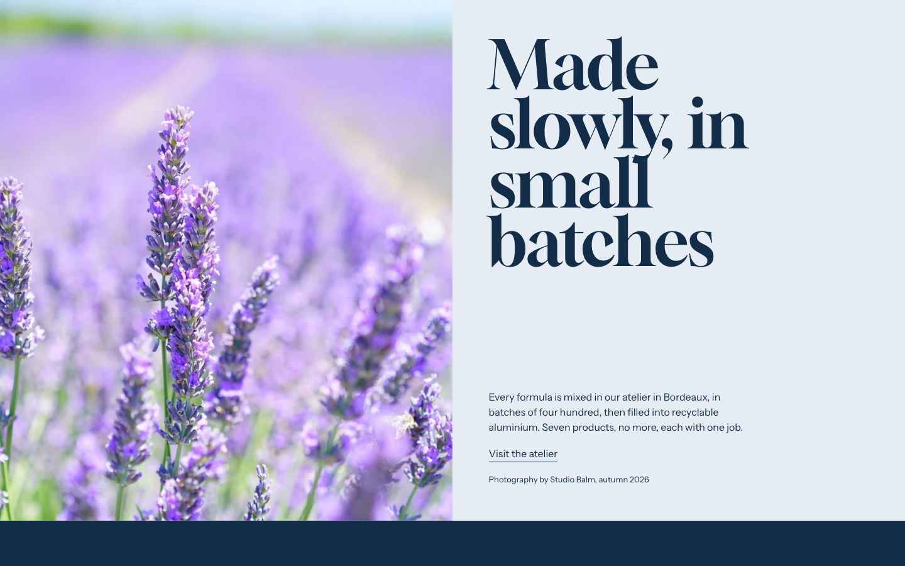
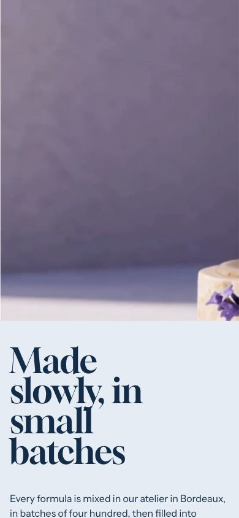

Campaign
A photograph and a short text on a flat panel: the story of a season or of a launch.
WhereAny template. Not available in the header or footer group.


What it is for
Between the hero and the products, a campaign gives the range a context: a photo, a heading of a few words, two or three sentences, a link and the credit of the photograph.
How it works
Image position (desktop) puts the photo left or right; Image position (mobile) above or below the text. Surface paints the text panel in the Paper, Field or Deep of the page color. The photo settles once, with a slow zoom, when the section comes into view; without JavaScript or with reduced motion it is at rest. Without a photo, its half keeps Shopify's placeholder drawing, in the colors of the section, until you choose one.
On a product page, Campaign tells the story of each product: connect the image, the heading, the text and the credit
to product metafields with the dynamic source icon, and the section wears the colors of the product. With
Hide when the image is empty on (the default), a product whose image metafield is not filled does not
show the section on your store; the theme editor shows a note instead. Elsewhere an empty image keeps its
placeholder. The demo's product template connects it to custom.story_image,
custom.story_heading and custom.story_text, after Texture.
Content tips
- Keep the heading short: it is set very large, a few words per line.
- Credit the photographer in Credit.
- Use Anchor to link to the section from a menu (for example
/#campaign). - On the product template, create the three story metafields (see Metafields) and fill them only for the products that have a story: the others do not show the section.
Settings
Section settings (13)
| Setting | Values | Default | Notes |
|---|---|---|---|
| Image | Image | Empty | |
| Hide when the image is empty | Checkbox | On | On a product page, the section is not shown when its image is empty, for example a product metafield that is not filled. Elsewhere, an empty image keeps its placeholder. |
| Image position (desktop) |
| Left | |
| Image position (mobile) |
| Top | |
| Heading | Text | Name the campaign | |
| Text | Rich text | Describe the campaign in two or three sentences: what it is, and... | |
| Button label | Text | View the campaign | |
| Link | Link | Empty | |
| Credit | Text | Credit the photograph in one short line | |
| Anchor | Text | Empty | Lowercase words joined by hyphens. Link to this section with #anchor, for example from a menu. |
| Surface |
| Paper | |
| Minimum height (desktop) | 50 to 100 svh, step 2 | 92 svh | |
| Photo height (mobile) | 30 to 90 svh, step 2 | 62 svh |